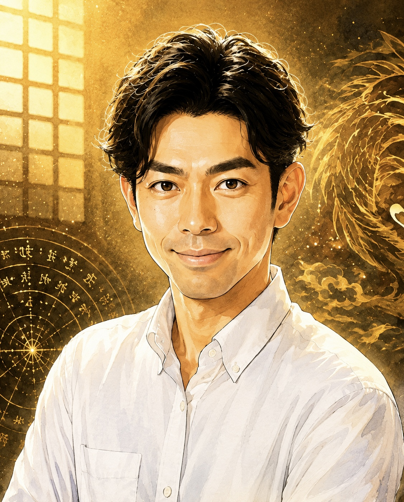

まずは、あなたの素質を確かめる。
霊視には、
ある程度の才能や素質が
必要です。
まずは無料の対面霊視で、あなたのお悩みを伺いながら素質を拝見します。
素質があると判断した方に、講座をご案内しています。
玄岳の霊視占い師育成講座
一人一人と向き合いたいため、講座の受け入れは先着10名限定
霊視を学びたい。でも、誰に習えばいいか迷っていませんか？
霊視ができて、相談者に真剣に向き合える占い師へ。

霊視を学びたい方へ。まずは無料の対面霊視で、あなたの素質を拝見します
霊視占い師育成講座は、玄岳が素質ありと判断した方にのみご案内しますのでご了承ください
講座は定員に達し次第、
受付を終了します。
霊視を学びたいけれど、
誰に習えばいいかわからない。
学んだけれど、
自信が持てない。
霊視ができる
占い師になりたい。
その一歩を、
玄岳と一緒に。
「あなたに相談したい」
そう思ってもらえる
占い師になりたい。
霊視と、人に向き合う姿勢。相談者に向き合うための土台を学びます。
あなたの素質を知ること。そして、占術と霊視を掛け合わせること。
霊視には、
ある程度の才能や素質が
必要です。
まずは無料の対面霊視で、あなたのお悩みを伺いながら素質を拝見します。
素質があると判断した方に、講座をご案内しています。
例えば四柱推命で、その人が持って生まれた素質や人生の流れを読む。そこに霊視を重ね、今の状態も視ていくとより正確に、そして細かくその人のことが視えます。
こうして掛け合わせることで、視えるものが驚くほど増えるんです。
複数の技術で相談者を深く捉え、鑑定の精度を高めていき相談者の方と真剣に向き合っていく。その積み重ねを経て、多くの人に頼られる占い師へと成長していくんです
あなたの素質を見極め、占術と霊視を掛け合わせる。本物の霊視占い師を目指して、玄岳と力を磨いていきましょう
霊視を学び、人の力になりたい方へ
霊視の実演、潜在意識を外して占い師としての才能を開花させる施術、質疑応答など
一人ひとりに、直接向き合うために週一回以上のマンツーマン指導で責任を持って対応できる人数として、講座の受け入れを先着10名に限定しています。
自分自身で動画などを見ながら学ぶことができます。講座が終了したあとでも閲覧することはできますのでご安心ください
オンライン、またはオフラインで玄岳と生徒さんが集まりセミナーをします
生徒さん同士の交流も推奨していますので、ともに占い師を目指している仲間が欲しい方なども大歓迎です
森本あきこさんの感想より抜粋
わたしは、幼少期の頃から感受性が強く、そのことで人に理解されにくく、いつも息苦しさを感じていました。
講座を通して能力の使い方や霊視などを学んでいく中で「自分が何者だったのか」がだんだんわかってきて、過去の息苦しさの原因を正しく理解し、受け入れられるようになりました。
そうすると、安心して自分を表現できるようになり、自分らしく生きれるようになりました。すると自分の周りに人も集まり、気づけば夢だった自分のサロンを開いていました。
いまでは定期的にお客様が来店し、喜んでもらえる毎日です。講座を通して開花したスピリチュアルの力を使うことで、いつの間にか「誰かのためになにかしたい」という夢が叶っていたんです！
わたしは、幼少期の頃から感受性が強く、そのことで人に理解されにくく、いつも息苦しさを感じていました。
「この生きづらさは何だろう？」と思っても、その原因を教えてくれる人がいませんでした。そんな感覚を抱えながら、大人になり、様々な人との出会いの中で「この人の言っていることは本当な気がする」と感じたのが玄岳先生でした。
当時のわたしは、自分のことがわからず、不安定で、自分も人も信じられず常に孤独を感じていました。でも、「誰かのためになにかをしたい」という漠然とした強い想いがあって、そのはざまでもがき、苦しんでいた気がします。そんな状態なので、現実も上手くいっておらず、親との不仲や職場でのパワハラ、そのとき付き合っていた人に振られる、悪徳商法にだまされるなどつらい時期でした。
それを変えたくて、占いやスピリチュアルのことなど様々な視点から学びましたが、いつも違和感を感じ、納得できずモヤモヤしたまま終わることの繰り返しでした。
そんな中たどり着いたのが、この講座でした。最初は「本当にこんなことを学んでなんになるんだろう」と不安な気持ちでいっぱいでした。でも受けていく中で「なんかこの人違うな。言葉が水のようにはいってくるな」と不思議な感覚になりました。
講座を通して能力の使い方や霊視などを学んでいく中で「自分が何者だったのか」がだんだんわかってきて、過去の息苦しさの原因を正しく理解し、受け入れられるようになりました。そうすると、安心して自分を表現できるようになり、自分らしく生きれるようになりました。すると自分の周りに人も集まり、気づけば夢だった自分のサロンを開いていました。
いまでは定期的にお客様が来店し、喜んでもらえる毎日です。いつの間にか「誰かのためになにかしたい」という夢が叶っていたんです。さらに親ともうまく付き合えるようになり、年下の旦那さんもいて、たくさん愛をもらっています。
いまのわたしの幸せがあるのは、玄岳先生のおかげです。わたしが誰に聞いてもわからなかったことを、教えてくれて、私らしく生きる道を信じ、照らしてくれて本当にありがとうございます。わたしもそんな存在になれるように、これからも頑張っていきます。本当にありがとうございました！！
霊視を学びたい方へ
Zoomで顔を合わせ、
あなたのお悩みを
お聞きします。
そして霊視を通して、
占い師としての素質を
玄岳が拝見します。
講座のご案内は、
玄岳が素質があると
判断した方のみです。
あらかじめ
ご了承ください。
これから占いを学ぶ方も、学んだけれど自信がない方も。その一歩を応援します。
まずは無料の対面霊視で、
あなたの悩みを伺いながら
占い師としての素質を
拝見します。
素質があると判断した方の中から、講座のお申し込み先着10名を受け付けます。
定員に達し次第、受付終了。ご希望の方は、お早めにLINEから無料霊視へ。